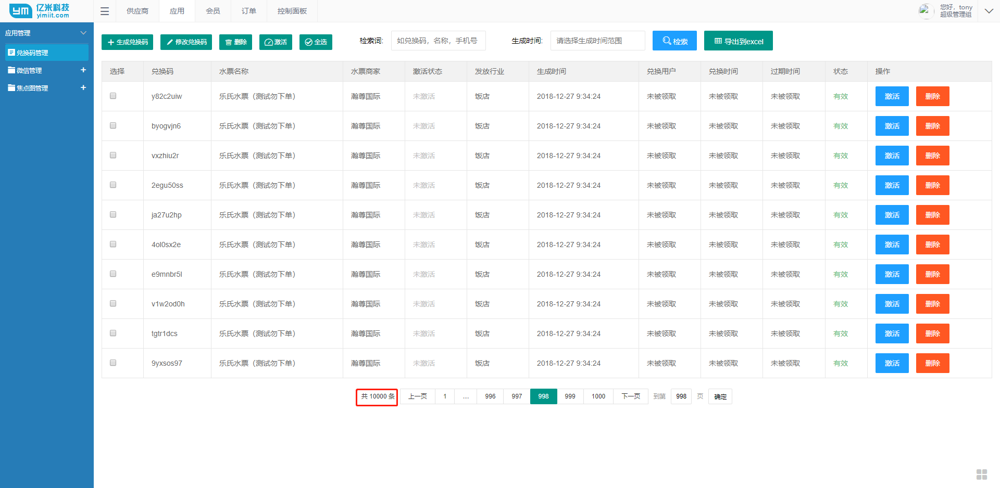
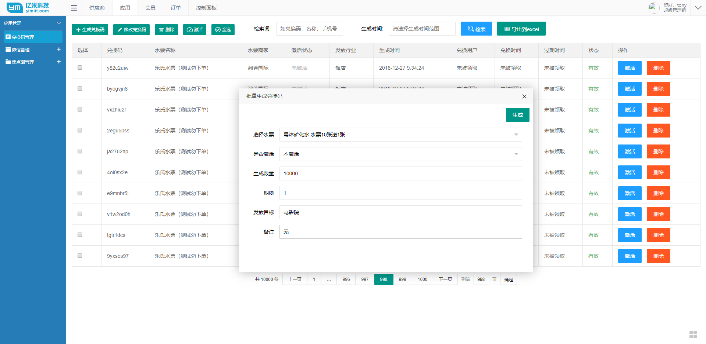
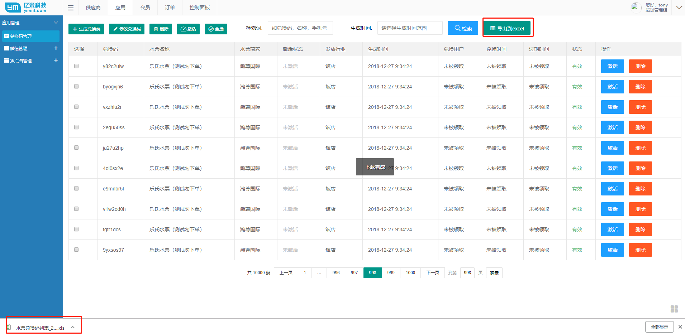

最近项目中涉及到一个大批量生成且插入数据的操作，大到啥程度呢，可能一次性插入超过50000条记录（好像也不是很大），那在系统中涉及到较大规模的数据读写操作时，为了同时兼顾效率和用户体验，肯定需要一些特殊的处理方式，说一下我的例子吧，可能不是最优的解决方案，但自我感觉良好
我遇到的需求是这样，要生成一批保证不唯一随机码（8位字母数字），然后将随机码以及其他数据构造模型列表，一并插入到数据库中；
需求很简单，拆解一下，就是两点
1、生成唯一码（字母数字）
2、支持大批量生成入库；
搞明白需求之后，就开始写代码了，首先是生成唯一码，先看代码
1 | public String[] chars36 = new String[] { "a", "b", "c", "d", "e", "f", "g", "h", "i", "j", "k", "l", "m", "n", "o", "p", "q", "r", "s", "t", "u", "v", "w", "x", "y", "z", "0", "1", "2", "3", "4", "5", "6", "7", "8", "9" }; |
代码很简单，这段代码其实是我从一位博友那参考过来的，他是用Java写的，我改成了.net的版本，代码意思注释里写的已经很明白了，我们应该知道，guid是一串由16位数字组成的长32位的字符串（有点拗口）那么我们就借助guid的全球唯一性来生成这个随机码，如果觉得不够随机，可以把chars36在扩展出大写的A-Z，这样在模除运算的时候被除数就要改成62，那么这种算法构造出来的随机码出现重复的可能性是多少呢？——36的8次方，天文数字了，可以说近乎绝对不可能重复了，但为了确保万一，我们还是要在库里对应的字段加上唯一性索引。），但是，注意，我们还是提倡在非特殊情况下还是要用string而不是String，因为代码规范也十分重要，而且也耽误不了什么时间，就好比你买水果送亲朋送好友，总得买那些带包装的话，虽然他吃的时候也得拆，但总比你拎着一个大塑料袋苹果送人要讲究吧。
对了，还要多说一点，大家看到我的generateInviteCode方法用的是String而不是string，好多博友应该都知道，string其实就是映射的String，而String是Framework下的类，也就是说，直接用String比string在代码执行效率上是要快一些的（最近对代码执行效率和简洁的追求有点疯狂
好了说完了第一点，再来说说第二点
其实关于大批量数据插入，大家应该也都有所了解，最关键的一点是要优化我们的insert语句，把多个insert合并成一个，即将多个”insert into table(a,b,c) values (1,2,3)”合并成一个，即”insert into table(a,b,c) values (1,2,3),(4,5,6),(7,8,9)”,之前看过有博友专门写了个控制台程序来测试两者差距，我在项目中也实际体验了一下（没专门写个控制台测试），对比了一下两种方式，实测，实测哦，第一方式插入10000条语句，耗时大约2分钟左右，第二种只需要6秒左右就ok了，需要注意的是，采用第二种方式的时候，values后面的条数不要太多（sqlserver的最大值是1000条）；
提高效率的辅助方法，就用到我上一篇提到的异步的方式了，我这里的处理方式是，将批量写入数据库的方法写成了异步，实测，插入10000条语句会在之前6秒左右的基础上提高到3秒左右，这还是包含了生成随机码的时间，可以说体验值再次大幅提升，看下代码
1 | public Response MakeRandomCode(int count, int vote_id, int limit, string vote_title, string target, string remark, int activition) |
1 | public int AddBulk(System.Collections.Generic.List<Model.random_code> list) |
1 | public async Task<int> AddBulk(List<Model.random_code> list) |
第三段代码直接拼的sql字符串，因为我的数据验证放到了模型里，所以保证进到数据逻辑层的代码肯定都是符合数据规范的，不会出现sql注入的问题。
说到这，不得不提一嘴orm框架了（比如很熟悉的ef），用orm很大的一个好处就是，当我们写lambda表达式进行大批量插入操作的时候，ef底层就会自动帮我们拼接成”insert into table(a,b,c) values (1,2,3),(4,5,6),(7,8,9)”这种格式，所以，用orm，在执行效率上不会出现什么问题，实际允许的情况下，推荐orm框架，写法简单，更方便。
好了，大概就是这样了，对了我文中所提到的测试结果，都是在测试服务期上进行的，阿里云的入门级服务器（2G内存，单核2.8GHzCPU，普通硬盘），如果在正式服务器，这个相应时间还会再有所提高，专业开发人员看了这么快的执行结果，甚至会让你产生系统出错了美好错觉，而非开发人员的体验就非常棒了！
附上几张张效果图



对了，再说一个跟本文无关的消息，算是个彩蛋吧，应该好多博友也都知道了，就是win10和对应的server，在最新的更新版本里，居然原生支持ssh了！兴奋的昨天赶紧试了下，还是很不赖的，用powershell就可以打开任何Linux发行版系统的命令行了，而且还可以打开windows的，以后说不定powershell也会借此东风火一把